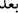

“__WORD__ misalinde olduğu gibidir. Sanki biz birinci ölüm dışında
hiçbir ölümle ölmeyeceğiz, demektir. Yahut
kelimesi istisnai munkati olarak
mensuptur. Mânâ; biz dünyada gerçekleşen ölümden başka bir ölümle ölmeyeceğiz
demektir. Buradaki “__WORD__” edatının “__WORD__” (sonra) ve “__WORD__ (başka) mânâsında olduğu da
söylenmiştir.
“ve bir daha” kafirler gibi “azap görmeyecek değil miyiz?” Zira azap her an ölümü
temenni etmeyi gerektiren büyük bir mihnet ve bela olduğu gibi, azaptan kurtuluş da
hakkında konuşulması gereken büyük bir nimettir.
Ebû Bekir Sıddîk (r.a.)’dan (rivâyet edildiğine göre der ki): “Ölüm kendisinden
önceki dünya hayatından zor, ancak kendisinden sonraki kabir, mahşer ve âhiret
hayatından kolaydır.” Âyette şuna işaret edilmektedir: Nefsani ve hayvani sıfatlardan
uzaklaşmak anlamına gelen ve “irâdî ölüm” olarak da isimlendirilen birinci ölüm ile
ölen bir kimse, kuşkusuz ruhani ve rabbani bir hayat ile hayat bulmuştur. Artık bir daha
ebedi ölmeyecektir. Bilakis mü’min bir yurttan (dünya) Hak Teâlâ’nın civarında diğer
bir yurda (ahiret) intikal edecektir. Bu kişi mahrumiyet âfeti ve hicran ateşiyle azap
olunmaz.
Fakir (Bursevî)’nin beytlerinden:
Kim ki kendi irâdesinden fâni olur
O kimse kendi canından hayat bulur
Azabdan ve elemden kurtulur
Hakk’ın civarında nimetlere erer
“Şüphesiz bu” bizim içinde bulunduğumuz ebedi nimet ve azaptan emin olma “büyük
kurtuluştur.” “Fevz”, selâmetle birlikte zafer elde etmek demektir. Yani kuşkusuz bu
durum, saadet ve her türlü murada ulaşmaktır. Zira harmanda dane, okyanusta bir damla
ne ise bu büyük kurtuluş yanında dünya ve içindeki her şey o derece kıymetsiz kalır.
Çeşitli elemler, belalar ve baş ağrılarıyla karışmış olan ve süratle elden çıkan
dünyevi haz ve zevkleri elde etmek için değil; “Çalışanlar,” yüce meram ve maksuda
ulaşmak ve “böylesi bir kurtuluş için çalışsın.” Kâşifî der ki: Gelip geçici dünya malı
ve makamı için değil bu nimetlerden ötürü amel edenler amel etsinler.
Yük çekeceksen güzel bir sevgilinin yükünü çek bâri
İş yapacaksan yârin işini yap bâri
Eğer yüzünü topraklı yola sürmek istersen
Bir eşsiz süvarinin yolunun toprağına sür bâri
Bu söz, doğrudan Allah Teâlâ’nın sözü de olabilir. Bu durumda Allah Teâlâ’ya itaat
ile onun sevabını talep etmeye teşvik edilmiş olur. Denilir ki bu âyetin mânâsı şöyledir:
Katlananlar eziyet ve sıkıntılara katlansınlar. Zira cennet nefsin hoşuna gitmeyen
şeylerle, cehennem de nefsani ve şehevi şeylerle kuşatılmıştır. Yani cennet bizim